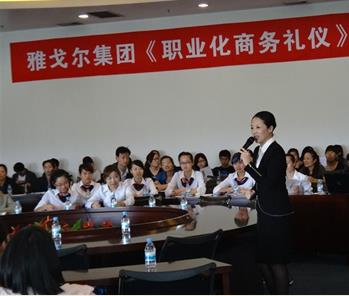

-

课程名称:
《基于客户情绪的优质服务塑造——服务从心开始》课程主讲:王维玲 课程对象:服务者/服务管理者课程收益： 理解『服务从心开始』内涵，用心服务创造感动剖析企业目前服务现状与问题所在，明确影响服务品质的因素 量体裁衣，从服务者心态、意识、技能提出整改方案，提升客户忠诚度与感知度还有客户的满意度，为企业创造效益
授课方式：讲师讲述-案例精举-情境演练-小组讨论-视频与FLASH呈现-团队游戏-形体训练
1-2天（6小时/天）课程大纲： 第一模块：服务因素分析--知己知彼百战不殆
第二模块：服务提升DNA--服务从『心』开始
第三模块：服务技能打造---魅力从『细节』开始
课程要点：第一模块：服务因素分析----------知己知彼百战不殆
机遇与挑战解读当今竞争---企业的竞争就是客户的争夺
未来的竞争是？
服务决定企业的生存
是你在选客户，还是客户在选择你？
当今服务业问题分析 我们现在卖的是什么---服务
人人都是服务者---没有服务意识就没有魅力的服务
提升企业竞争力的模型
服务障碍因素分析什么影响了优质服务？
什么影响了你与客户的距离
第二模块：服务提升DNA----------服务从『心』开始服务意识塑造----意识决定行为 魅力服务必备三种意识
服务意识---漫画分析何为服务意识
执行意识---如何在服务中做的更完美
团队协作意识---没有完美的个人，只有完美的团队
服务必备的三种热爱
热爱工作---爱一行，干好一行
热爱变化---变才是永恒的不变
热爱思考---思路决定出路
服务必备三种心态
快乐工作心态---工作是礼物
感恩心态----是你给客户机会，还是客户给我们机会？
积极阳光心态---内心充满阳光，才能在工作中播撒阳光
服务-----让客户『满意』到客户『忠诚』的策略 魅力服务『七见』
主动服务
创造惊喜
增进互动
超值享受
细节到位
量身打造
关怀体贴
服务之『六心』
服务要真心
服务要用心
服务要爱心
服务要知心
服务要创新
服务要信心
第三模块：服务技能打造---------魅力从『细节』开始服务必备三种技能 客户魅力沟通技能
客户情绪引导技能——转怒为喜的艺术
客户服务礼仪技能
人际沟通技能
沟通原则-----万变不离其中
世界上最远的距离---咫尺天涯，不良沟通
黄金法则—真诚
白金法则—尊重
钻石法则—同理心
沟通中语言艺术：沟通过程中的三个行为：说的技巧、听的学问、问的艺术
听的艺术
聆听的层次
听的技巧
倾听时的肢体语言
互动：倾听互动游戏
说的技巧:语音、语调、语速、十字礼貌用语
说什么话？
如何说？
有声语言对服务的影响
如何说让客户感动的话
如何说让客户认同的话
如何说让客户有兴趣的话
如何说委婉的话
问的艺术：如何有效发问
提问的好处
如何提问
情绪管理技能
客户的基本情绪
人的九种情绪
情绪的转化
情绪对美丽服务影响
服务者情绪管理五种原则
乐观看问题
培养坚毅的个性
增强自信心
学会幽默
学会自我暗示法
客户情绪管理原则
化解一次情绪，建立一份友谊
客户情绪管理法则-----客户的情绪能来也能走，看我们如何送走
第一步：关注
第二步：理解
第三步：认同
第四步：引导
客户服务礼仪技能
服务人员礼仪概述
礼仪≈企业利润
得体的礼仪为你的服务加分！
服务人员仪容礼仪规范
仪容要求---你的脸就是一张企业名片
头发是你的第二张脸
手部要求细节
服务人员仪表礼仪规范
柜员着装规范
鞋、袜规范
领带、饰品规范
服务人员仪态礼仪规范
服务中各种姿势的要领：站、立、坐、行、蹲
手势 服务人员的制胜法宝
克服不雅的姿势
眼神的规范与运用技巧
微笑的魅力及训练
客户总结与回顾

 回顶部
回顶部
王维玲老师 版权所有